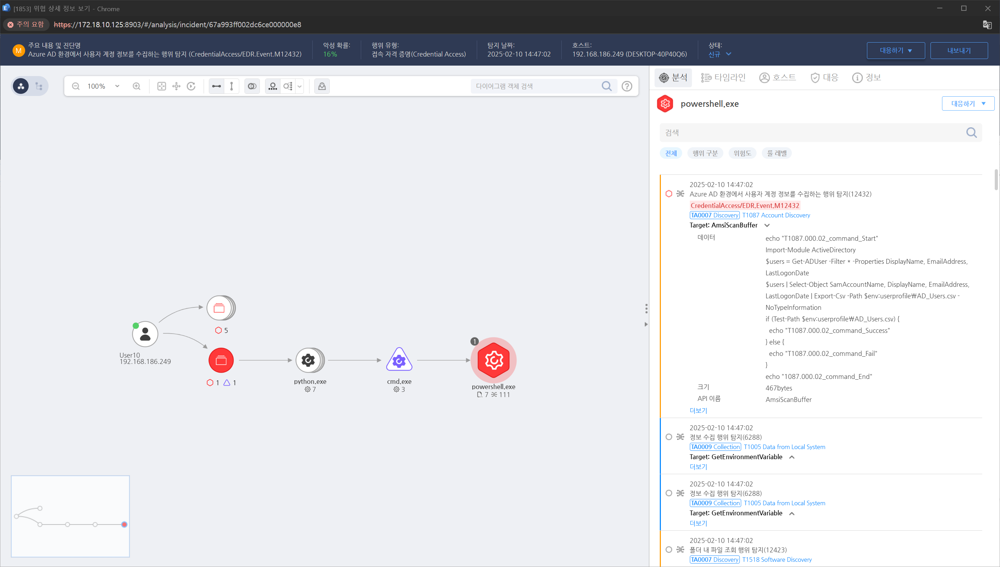

T1087.000.02 계정 수집 (AD 환경)
D3FEND
MITRE ATT&CK 액션을 기준으로 대응 방안을 작성
Detection
Azure AD 환경에서 사용자 계정 정보를 수집하는 명령어인 Get-ADUser 명령어를 탐지합니다.
행동 유형 : AMSI_SCAN
오퍼레이션 : contains
값 : Get-ADUser
Detection(EDR)

https://172.18.10.125:8903/#/analysis/incident/67a993ff002dc6ce000000e8
Response
- 의심스러운 계정 발견 시 즉시 비활성화 및 비밀번호 초기화
- 공격자가 수집한 계정을 사용하여 추가 공격을 수행했는지 조사
Mitigations
- 최소 권한 원칙 (Least Privilege) 적용
- 일반 사용자가 다른 계정 정보를 조회할 수 없도록 권한 제한
- Windows "SeInteractiveLogonRight" 정책 설정으로 불필요한 계정 조회 차단
- /etc/passwd 등 민감한 파일에 대해 접근 제한 (chmod 600 /etc/passwd)
- Active Directory 및 LDAP 보안 강화
- LDAP 익명 바인딩(Anonymous Binding) 비활성화
- AD에서 비인가 사용자의 계정 정보 조회 제한 (LDAP Signing 활성화)
- PowerShell 및 DSQuery 명령어 실행 제한 (Set-ExecutionPolicy Restricted)
- 원격 접근 제한 및 네트워크 보안 강화
- SSH, RDP, SMB 등 원격 접근이 필요한 사용자만 허용
- VPN을 통해서만 AD 또는 LDAP 접근 가능하도록 네트워크 ACL 적용
- 방화벽에서 공격자가 사용할 가능성이 높은 포트(389, 636, 445 등) 차단
- 크리덴셜 스터핑 및 계정 탈취 방지
- MFA (Multi-Factor Authentication) 적용
- 강력한 비밀번호 정책 적용 (최소 12자, 특수문자 포함)
- 공격자가 사용할 가능성이 있는 기본 계정 삭제 (예: guest, admin, test 등)
Affected Techniques
Action 실행시 함께 영향을 받는 다른 Techniqes
| D3FEND |
| D3-AM Access Modeling |
| D3-AI Asset Inventory |